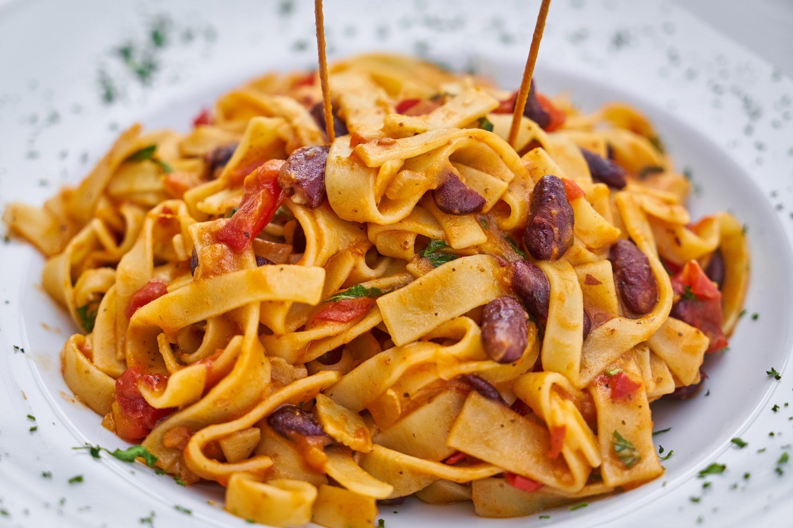

Spaghetti Carbonara

Ingredients:
- 1 lb spaghetti
- 4 oz pancetta, diced
- 4 large eggs
- 1 cup grated Parmesan cheese
- 1/2 cup grated Pecorino Romano cheese
- 4 garlic cloves, minced
- Salt and freshly ground black pepper to taste
- 1/4 cup fresh parsley leaves, chopped
Instructions:
- In a large pot of salted boiling water, cook spaghetti according to package instructions until al dente. Reserve 1/2 cup of pasta water before draining.
- In a large skillet over medium-high heat, cook pancetta until crisp, about 8-10 minutes. Add garlic and cook for an additional 1-2 minutes, until fragrant.
- In a medium bowl, whisk together eggs, Parmesan cheese, and Pecorino Romano cheese.
- Remove skillet from heat and add cooked spaghetti to the skillet with pancetta and garlic. Toss to combine.
- Add the egg and cheese mixture to the skillet with the spaghetti and toss quickly to combine. If the pasta seems dry, add a little bit of the reserved pasta water to help loosen it up.
- Season with salt and freshly ground black pepper to taste.
- Divide spaghetti carbonara among plates and garnish with chopped parsley.